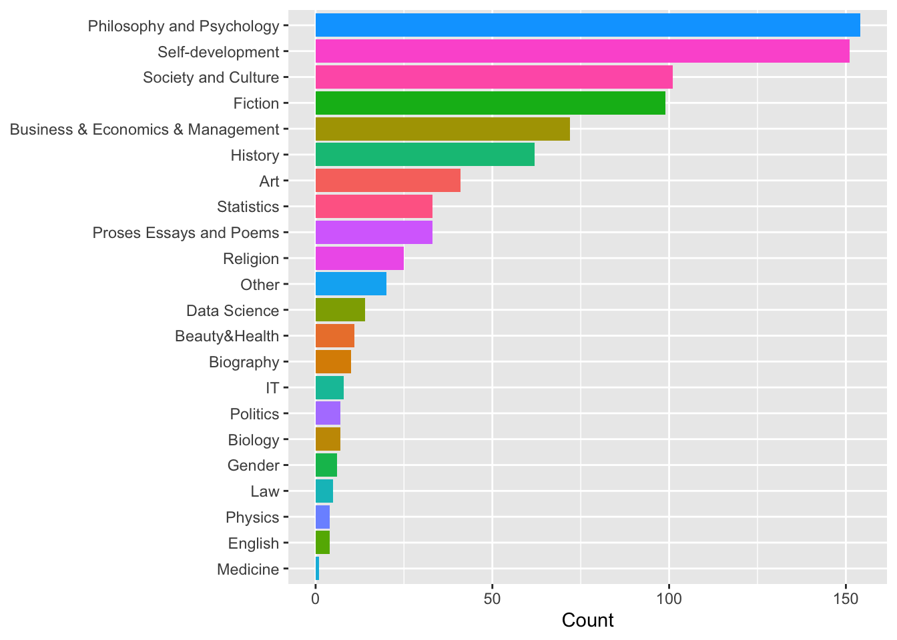

Reading Notes
Hui Lin
2016-04-29
Chapter 1 Introduction
Learning is happening increasingly outside of formal educational settings and in unsupervised environments. Technological advantages provide new tools and opportunities for life-time learners. This reading notes is my first step of managing my learning (aka: Personal Knowledge Management). This step is called Personal Information Management(PIM). The goals are:
- Organize information
- Initially process the information and understand the information structure
- Chunking: cluster similar information, filter out some detail, degrade the complexity
The reading notes are arranged according to book category in my reading list since 2009. For some reason I lost all reading information before 2009. There are tons of paper notes need to be electrolyzed and I will keep working on it in my spare time. My personal comments will start with “Hui:” in blue. Sometimes I summarize the contents with my own words. It is great if you find any of those notes useful for you as well. I thank all my friends who recommended great books to me. I wrote this notes with R Markdown (Allaire et al. 2016) and the R package bookdown (Xie 2016a). To learn more about R Markdown, please check out the online documentation. For knitr, please see Xie (xie 2015). Here is a guide to authoring books with bookdown.
- Name: Book name
- ID: Book index number
- Category: Book category
- Author: Author of the book
- Progress: My reading progress(from 0% [haven’t started] to 100% [finished])
- Priority: My reading priority
1.1 Rules of Generating book ID
- Category code + Number
- Number was origionally assigned as the rank of the book in its category devided by 100 (i.e rank/100)
- For new book
- search for the maximum number in that category (
mn) - use
mn+0.01as number for the new book
- search for the maximum number in that category (
1.2 Basic Statistical Analysis
Here is a plot for counts of books in each category……

Here is a plot showing the percentage of books I have started (or finished) across different categories.
